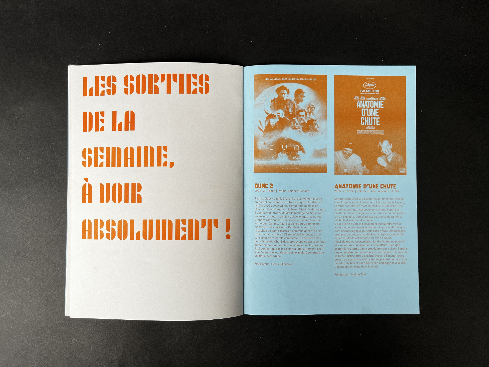
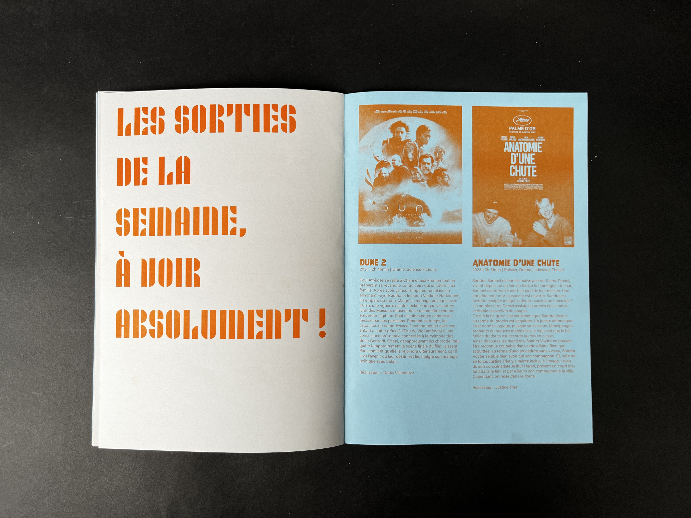

Pass'age
Ce fanzine du club cinéma dévoile volontairement les moments clés des films pour piquer votre curiosité et vous inciter à nous rejoindre. Impossible d’échapper aux spoilers !
Dans le cadre d’un projet de groupe, nous avons concu en trois jours un fanzine imprimé en risographie.
Ce projet nous a permis d’explorer des principes graphiques variés, où le spoil pouvait s’inviter subtilement dans le texte ou s’afficher de manière plus explicite.

 
